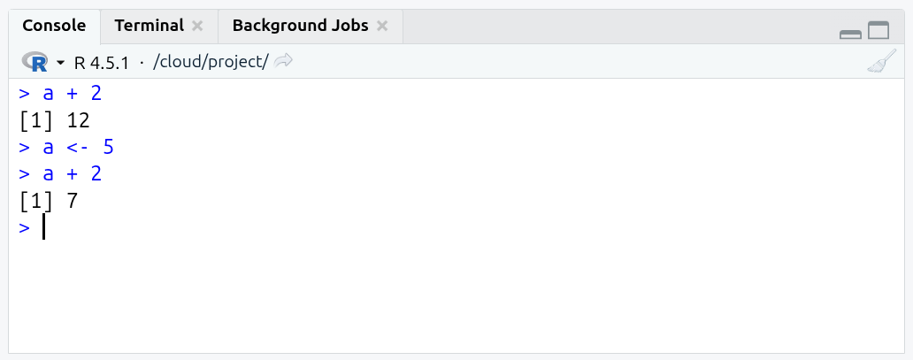
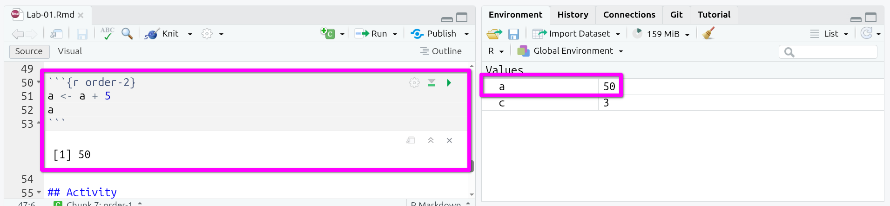
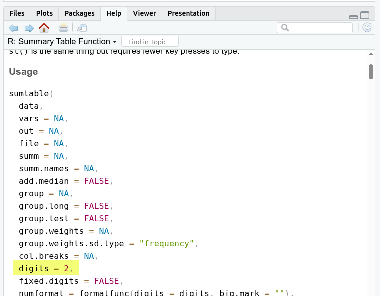

2 + 2[1] 4This page covers the basic aspects of R’s syntax and some common symbols might see in R code. Common base R functions used for managing packaging and data are instead on the Base R page.
R is a programming language and environment specifically designed for data analysis. Computer code is used for working with and analysing data, which when run is passed to an R interpreter to execute. Inside RStudio, the Console panel is running the R interpreter in an interactive shell. It runs in a ‘read-eval-print’ loop, which basically just means you can type code into it, which is then read, evaluated, and any output - or error messages - printed (i.e. displayed) on the screen. After it finishes running code passed to it, it waits for any further code being passed to it. Within RStudio, when you ‘run’ a code chunk, RStudio passes the code to R and copies any output underneath the code chunk. R also maintains an active ‘environment’ whilst it is running, which is a collection of all objects - such as data frames, variables, loaded packages - created by any code that was run so far.
Fear and trepiditation are usual responses to hearing the phrase “we will use a programming language for data management and analysis”. Some of this fear seems to stem from notions of what ‘programming’ involves. However, across all the semester 1 courses on the programme, what is covered is very much ‘coding’ rather than ‘programming’. What we are interested in is how to use R to carry out a specific sequence of steps using computer code.
To try and make the difference more concrete. Using R to carry out a specific sequence of steps - like loading in a specific dataset and analysing it - is coding. Using R to create a package which provides features others can use in various ways with different datasets - such as a package to create and work with datasets consisting of LinkdIn posts - is programming.
In Data Project 2, we move to what could broadly be called ‘upper beginner’ R code to work with more ‘messy’ data that remains solidly within the ‘coding’ category - where the main differences are the number of steps to consider and handle in the initial data management steps based on the data you are wanting to work with.
Computer code can seem overly confusing and overwhelming at first, with a big initial hurdle is getting acquainted with the ‘syntax’ of the programming language you are using: the structures and rules for how code in a given programming language need to be written. For example, if we wrote example without quotation marks in a line of code, this would be read by R as referring to an object. If an example object has not already been created - such as with example <- 5, which assigns the value 5 to an object named example - running code such as example + 2 will result in an “object not found error”. Place that word in quotation marks though - "example" - and R now treats it as a string of text rather than an object. Where if you try to run "example" + 2 you will instead get a “non-numeric argument to binary operator” error - which is basically just R saying it is not possible to add a number to a string of text.
The reason I start with examples and the errors you might run into with them is because running into errors is a common everyday experience of working with code. The most experienced researchers will still regularly encounter ‘basic’ syntax errors by forgetting to include a , in the right place or accidentally deleting the closing ) for a function. As a beginner though repeatedly running into errors can misleadingly make you feel as if you are somehow failing. With code though it is far more important to learn how to understand and fix errors rather than trying to achieve the impossible of never running into any.
An operator is any symbol or combination of symbols which form part of a programming language’s syntax for specific operations, such as <-, +, and $.
The easiest to begin with code in R is simply using it as a calculator using ‘arithmetic operators’.
Most of this works as expect, except for use of * for multiplication instead of x:
+ adds.
2 + 2[1] 4- subtracts.
21 - 4[1] 17* multiplies.
5 * 5[1] 25/ divides.
50 / 20[1] 2.5^ is used for power - so ^2 squares a value.
3 ^ 2[1] 9Note, most programming languages, R included, do not use x for multiplication. One reason for this is because x could also end up as a named object, x <- 2 (see objects and assignment below).
In R, it is common (and practical) to store values or data as ‘objects’. Once values are assigned to them, objects are then stored in your current R session. Assignments are made using name <- value, such as a <- 5 or b <- 'Glasgow'.
There are three main assigment operators in R: =, <-, and ->. You will most commonly see <-, which is the ‘left assignment’ operator, meaning the evluated value to the right of it will be assigned to an object on the left. = is a functional equivalent to it. However, within R ‘style guides’ <- is favoured for assigning values to objects and = only used inside functions, e.g. a <- some_function(b = 2). -> is the ‘right assignment’ operator and will likely not often see used and many ‘style guides’ for how to write R code advise against using it.
Take the following:
a <- 2As <- is a left assignment operator the evaluated value of what is on the right of the operator is ‘assigned’ to the object on the left. ‘Evaluated’ simply means that if any code needs to be run as part of what is on the right, that is done first before the output from that code is assigned to the object on the left.
Take for example:
a <- 2 + 2So in the above R will first ‘evaluate’ 2 + 2 and then assign the value of that calculation to an object named a.
To get the value for a simple object like the a object created above we can simply run a line of code with just that object’s name:
a[1] 4Importantly, because the right-hand side is ‘evaluated’ first, we can do calculations like the following:
a <- a + a
a[1] 8When the above code runs, to evaluate the right-hand side R first gets the current value for a which was ‘4’. So, a + a becomes 4 + 4 which is 8 and now that is evaluated it gets assigned back to a, meaning if we run a again we can see its new value is now 8.
However, what if we run code without an assignment operator?
Save we first created another object:
b <- 5Then ran a calculation:
b + b + a[1] 18We receive the value 18 but without OBJECT <- before it this value is not being stored anywhere. In some cases that may be perfectly fine, we may just have wanted the result and do not need it for later reuse. But if this was a value we wanted to store without having to repeatedly type b + b + a every time, we can assign it to a object:
c <- b + b + aIn the same way as you assigned these simple values, you can store other types of objects, e.g. vectors and data frames, dataframe_name <- read_csv("data/file_name.csv"). This is useful because those objects will be ready in your session to do some computations.
Say a has been assigned the value 10 (a <- 10), as in the screenshots in this section. If you assign a different value to the same object, e.g. by running a <- 5, you will replace the old value with the new. So, instead of having a representing the value 10, you will have 5.

a + 2 run in the Console before and after assigning a new value to a.The code a + 2 remains the same, but the result from running the code changes based on the value assigned to a. That may seem an obvious point to make, but a large proportion of unexpected results and errors arise from changing what is assigned to an object. If variables suddenly disappear or your graphs unexpectedly show different results when re-run, it is likely that you ran code that assigned a changed version of the data back to the object storing it.
As shown in section above, it is also possible to use an object in a calculation and assign the result of that calculation back to the object. For example, if a holds 10, a <- a + 5 is equivalent to a <- 10 + 5. Whilst that can be perfectly valid to do, care needs to be taken as now a is 15. What do you think would happen if you keep running the same a <- a + 5 line of code?

a <- a + 5 and a several times, a has reached 50.If you accidentally ran a code chunk multiple times which has such a compounding effect, the fix is to simply run your code again from the top-down (see running your code again from the top). Thankfully, RStudio makes this easy to do in an R Markdown file (see running code chunks).
Most functions in R for data analysis do not directly change the object - such as a data frame - passed to it. Instead, the functions return a new object with the changes. An explicit assignment back to the original object is required if you want to change it. For example, say we had a survey dataset we had read in and stored in a dataframe named survey_data and it had a column ethnicity for the respondent’s self-reported ethncity. In many situations the data will be read in as ‘character’ data - treating each value as a string of text - rather than categorical. We can fix that by using the factor() function.
However, if we wrote the following:
factor(survey_data$ethnicity)R will return output showing all the levels and values for a factor object created - but it is not actually being stored anywhere. This can be confusing as R displayed the values. However, that is R’s default behaviour if code returns an output but is not assigned to an object. Compare running 2 + 2 and a <- 2 + 2. R assumes if you are not assigning the values somewhere that you are instead asking to view the values.
So, if we want to actually update our column we need to assign the output of the function back to our column:
survey_data$ethnicity <- factor(survey_data$ethnicity)What the code is effectively instructing R to do is “take the existing data in the ethncity column, create a new object by converting its values into a factor, then replace the column with this new factor variable” (factor() is covered on the Base R page, and the $ further down this page.)
The aspect to be careful with is that when you assign the result to an object named the same as an existing object, you replace the old object. That is what you want when updating a column’s type, but not when creating a new column. In that case, you would want to assign it to a different name:
survey_data$new_column <- some_function(survey_data$existing_column)An example might be if had a survey where respondents gave their exact age, but for the analysis you are doing you wanted to also create a new column placing respondents into different age bands.
a > b asked “is the value of a greater than the value of b” and will return TRUE or FALSE.TRUE or FALSE. | is the OR operator and returns TRUE is either value to the sides of it is TRUE, e.g. the sides of 1 > 2 | 4 > 2 would evaluate as FALSE | TRUE, whereby the | expression here would return TRUE as one side of it is TRUE.%in% which is can be used to check if a value exists in a vector or column and again returns TRUE or FALSE.These operators do not make much sense on their own, but they are essential when wanting to act on data based on specific rules or patterns. For example, say you wanted to create a subset of your data, keeping only rows for participants living in Scotland, then your code would include country == "Scotland" (see filter() on the tidyverse page).
Each of these returns TRUE or FALSE:
1 == 5[1] FALSE1 + 3 == 2 + 2[1] TRUE1 > 5[1] FALSE5 < 10[1] TRUE'this' == 'this'[1] TRUE'this' == 'that'[1] FALSE'this' != 'that'[1] TRUE!FALSE[1] TRUE= is used already for normal assignments and within functions, == is used if wanting to compare whether the left and right hand side are the same.> asks whether the left side is greater than the right. <, <= (less than or equal to) and >= (greater than or equal to) work the same way.! is used as a NOT operator, so when combined with = to create != is interpreted as “is not equal to”. It can also be used on its own before a value or object, so !FALSE is interpreted as “not FALSE” returning TRUE.Then & and | combine two conditions: and %in% checks a value exists in an object:
5 > 1 & 5 < 10[1] TRUE5 > 10 | 5 < 10[1] TRUETRUE & FALSE[1] FALSETRUE & TRUE[1] TRUETRUE | FALSE[1] TRUEFALSE | FALSE[1] FALSE& asks whether both conditions are true. In pratice, you might use this if wanted to create a subset of data with participants who are Scottish and currently employed.| asks whether either condition is true. Again in practice, this could be used if wanted to create a subset of data with participants who are living in Glasgow or Edinburgh.Another operator will see quite often is %in% which is used to check if a value is in a set of values:
:: namespace operatorTemplate
PACKAGE_NAME::FUNCTION_NAME():: is the namespace operator for accessing an object (such as a function or dataset) from a package, in the format package::object.
If you load a package using the library() function, you can call objects from it directly as object without needing to include package:: before it.
It is common to load packages rather than rely on ::. However, you will stumble across it in places. For example, the setup code chunk in a new R Markdown file (knitr::opts_chunk$set(...), see the setup chunk). It is also useful when working with two packages that both have a function with the same name. For example, if two packages, package_a and package_b, had a function called some_function() that despite the same name did different things and you need both for the code you are writing, you can access them with: package-a::some_function() and package-b::some_function().
GenAI for some reason in responses featuring R code is overly fond of using :: instead of loading packages, which gives misleading impression that it is used all the time, whereas there are plenty of experienced researchers who would not be able to tell you what :: does as they never need to use it.
$ component operatorTemplate
OBJECT$COMPONENT$ is the component operator for accessing named elements within an object, in the format object$component. In data analysis it is often used to access a column (variable) from a data frame.
For example, if a data frame named survey_data has a column named age, we can access it with survey_data$age. Here it basically means, from the survey_data data frame select the age column/variable.
[ROWS, COLUMNS] subsetting operatorTemplate
DATA_FRAME[ROWS, COLUMNS][] is the subsetting operator and is used to extract elements from an object. For a data frame the basic format is DATA_FRAME[ROWS, COLUMNS], with the rows before the comma and the columns after it. Leaving either ROWS or COLUMNS blank selects all of them, however if want all rows you stil need the comma before columns (e.g. DATA_FRAME[, COLUMNS]). ROWS and COLUMNS can each be one or more numbers: such as a range like 1:10, c(2, 4) for the second and fourth rows/columns, or column names in quotes inside c(), c("VARIABLE1", "VARIABLE2"). For example, surveydata[1:20, c("age", "city")] would return a data frame with just the rows 1 to 20 and columns named “age” and “city”.
When it comes to more complex selections, the tidyverse’s select() and filter() functions can do the same job in easier way (see the tidyverse page).
|> pipe operatorThis operator is what is known in programming as ‘syntactic sugar’: syntax which helps make code easier to read and write without changing any functionality.
Template
DATA_FRAME <- DATA_FRAME |>
FUNCTION1(ARGUMENTS) |>
FUNCTION2(ARGUMENTS) |>
FUNCTION3(ARGUMENTS)The pipe operator passes the result of one function (or an object, here DATA_FRAME) as the first argument to the next, left to right. DATA_FRAME |> FUNCTION(ARGUMENTS) is the same as FUNCTION(DATA_FRAME, ARGUMENTS), where ARGUMENTS are any further arguments the function takes.
Pipes can also be ‘chained’ together - passing the result from one function to another. So from the lines above starting with DATA_FRAME would run FUNCTION1, FUNCTION2 and FUNCTION3 in turn, and assign the result back to DATA_FRAME. A chained ‘pipeline’ can have as many steps as you need.
Another wonderful thing about pipes is that they let us break complex code over multiple lines. To do so, add the pipe at the end of the line before each function, then start each new line with an indent followed by the function If you type |> at the end of a line and hit Enter, RStudio will add the spaces at the start of the new line for you. Similarly, at the start of a line, if you hit tab on your keyboard, RStudio should convert it into a 2 space indent for you.
Let’s use it with an actual function -
The sum() function adds numbers together, here in the format sum(x, y):
Using a pipe for 1 |> sum(1) is the equivalent of sum(1, 1). So the pipe lets us ‘unpack’ the first argument in each function, whereby line 1 reads as ‘take 1, then add it with 1’ and line 2 ‘take 1, then add it with 1, then add it with 5’. So a pipe can be read aloud as “then”.
This may seem as if it is overcomplicating things, but as the code becomes more complex the value of the pipe operator becomes clearer. The second line above, 1 |> sum(1) |> sum(5), would be written as sum(sum(1, 1), 5) without pipes. Going left to right, 1 |> sum(1) would be sum(1, 1), and then sum(1, 1) |> sum(5) would be sum(sum(1, 1), 5). Pipes then help us avoid foo(foo(foo(...), ...) ...) monstrosities in our code.
(In coding examples, you will often see words like foo, bar and baz used as placeholder names when explaining how coding syntax works rather than using real functions, and x, y, and z as placeholder names for variables / arguments; see functions and arguments.)
Plenty of functions take more than two arguments. Imagine we had a data frame named df and we were updating it by using - in order - foo, bar, and baz functions that each take arguments x, y, and z. Without pipes our code would be:
df <- baz(bar(foo(df, y, z), y, z), y, z)This is a tangled mess: we want the result from foo passed to bar and its result in turn passed to baz. This ordering though gets visually reversed when nesting each function within the other - we have to read it inside out for it to make sense.
With pipes, it instead becomes:
df <- df |>
foo(y, z) |>
bar(y, z) |>
baz(y, z)Now it is easy to read and the ordering of the functions matches how we could verbally describe what the code does: “we are updating a data frame called df by running the functions foo, bar and baz on it in turn”.
In online resources, older code, and textbooks, you may come across another pipe, %>%. This pipe comes from the tidyverse. The tidyverse pipe came before the base R one, and due to its popularity an equivalent was added to base R. Whilst you will still see it in use, and it remains supported in the tidyverse, the tidyverse itself recommends people start using the base R |> pipe. For the uses on these pages they work the same:
As the base R pipe is relatively new, most of the code generative AI tools were trained on uses the older pipe, and they default to it unless told otherwise.
In quantitative analysis, we often distinguish two main types of variables:
In R, the most basic data building blocks are atomic vectors. There are six atomic types: logical, integer, double, character, complex, and raw. In relation to our two main types of variables, we use numeric vectors (integer or double) to store continuous and discrete values, and factor vectors (a class built on integer codes + character labels) to store nominal and ordinal categorical values. Two other vectors we commonly use are character vectors, for text, and logical vectors, for TRUE / FALSE.
numeric42 or 5.1.
If you want to enter numeric values, you simply input the raw number without quotation marks. A numeric vector is usually stored as a double internally by default. The difference between integer and double is based on how they are computationally stored. Base R and most R packages handle the difference behind the scenes, so the difference in how they are stored does not matter to us.
character"Glasgow". ('42' as it is in quotes would also be treated as character.)
When you want to input text (referred to as character values in R), you need quotation marks, 'text' or "text". Character vectors store text, such as unique respondent IDs (“A102”, “C006”) and free-text answers.
logicalTRUE or FALSE, written in capitals and without quotation marks.
Logical vectors store boolean TRUE / FALSE values, useful for filtering and conditions. They are also returned as values when using ‘relational operators’, such as 20 > 30 which returns FALSE as 20 is not greater than 30.
Relational operators can be used on entire data frame columns and used to create new columns. For example, the code below would check values in an existing age column and return TRUE is 18 or greater and false if less than 18, storing the values in a new is_adult column:
survey_data$is_adult <- survey_data$age >= 18A factor is a class combining integer codes and a levels attribute (see levels() on the Base R page) containing the human-readable character labels for those codes. Each stored integer points to a character label in levels, so 1 might correspond to "Conservative", 2 might correspond to "Labour", and so on. For ordered factors, used for ordinal variables, R also records an explicit order of the levels to enable comparisons and sorting by that order. For example, if recording medal winners, there is explicit order of the levels for gold, silver, and bronze.
(How to make a factor from a variable is under factor() on the Base R page.)
class()
classclass(42)[1] "numeric"class('42')[1] "character"class(TRUE)[1] "logical"class(gapminder$continent)[1] "factor"You can use the class() function to check what class an object or value is in R. A column of a data frame is checked the same way, DATA_FRAME$VARIABLE. In the code above, we are checking the class for the continent column of the gapminder data.
(The tidyverse has a wonderful function glimpse() that shows the type of every column in a data frame at once (see glimpse() on the tidyverse page). Changing a variable from one type to another is under changing a variable’s type on the Base R page, and inside mutate() on the tidyverse page.)
NA
Within R, values designated as ‘missing values’ are grouped together and labelled NA. Importantly, this stands for “Not available” - covering all ‘missing’ data, i.e. data this is entirely missing and values designated as representing missing values. A common mistake is to assume NA stands for ‘non applicable’, which is a much smaller category and not always treated as ‘missing’ data analysis, resulting in inaccurate interpretations.
Note, summary functions such as mean() and sd() return NA if a variable has any missing values, unless told to remove them with na.rm = TRUE (see summary statistics). is.na() checks whether a value is NA [(and !is.na() whether it is not, see operators)
c()
A vector in R is simply a set of values that are all of the same ‘class’ (i.e. there are all integer values or all character values). To create one, we use the c() function - with the ‘c’ being short for ‘combine’. For example:
ages <- c(12, 34, 10, 100, 32, 16)
ages[1] 12 34 10 100 32 16c() combines the values given to it, separated by commas, into one vector, here assigned to ages. If we were instead working with text values each would need quotation marks, cities <- c("Glasgow", "Edinburgh"), especially as we could also have text values with , already - names <- c("Smith, John", "Baker, Jack") - where the quotation marks make clear (1) that the words represent text and not object names and (2) where each text string starts and ends.
We often need c() whenever two or more values are given to a single argument of a function, as , is used to separate arguments in a function. If we had function(1, 2), R reads each number as a separate argument being given to the function, whereas function(c(1, 2)) makes clear that 1 and 2 are being assigned to the same argument. For example, we use c() if wanting to install multiple packages at the same time: install.packages(c("tidyverse", "vtable")).
(And vtable’s sumtable() is good example of more complex function where need to use c(), see vtable. In contrast, a lot of Tidyverse functions are designed to limit number of situations where you need to use c().)
A function’s name is followed by brackets holding its arguments, separated by commas.
In practice, you often do not want to specify all arguments when using a function. You give the ones you need, and the rest keep their default values. Those you give can be given by position or by name, so these two lines do the same:
word = ... is what is known as a ‘named argument’ (digits = 1 here), and named arguments let you specify exactly which arguments you are using despite the order they appear in.
sumtable(): each argument is listed with its default value, such as digits = 2.For what we cover on the programme, you will not need to write your own functions, but functions will make a lot more sense if we go through creating a couple of simple ‘toy’ examples. Say we wanted to create a function which takes two numbers and writes a string of text of the sum of the two together, we could create it with the following code:
add_numbers <- function(x, y) {
paste("The value of", x, "plus", y, "is:", x + y)
}Here:
add_numbers is the name of the function we want to create<- function(x, y) declares we want to create a function that takes two arguments, we will name x and y. (Argument names - with a few exceptions - can be pretty much anything you want.){} curly braces is the reuseable instructions for the function we are creating, which to keep things simple for this first example we just have a single line of codepaste() is an existing function to combine text and output together. Here we use it to combine strings of text, the original values for the arguments, and the value of the two arguments added together.So, let’s test it:
add_numbers(1, 2)[1] "The value of 1 plus 2 is: 3"add_numbers(5, 5)[1] "The value of 5 plus 5 is: 10"You may have spotted in R code across the examples on these webpages and elsewhere two functions, paste() and paste0() and wondered (1) what is the 0 for and (2) why are there two ‘paste’ functions?
If you look at the paste() documentation you will see both of these functions share the same documentation page. Below is a simplified version of the usage examples from the documentation with just the two parameters of interest to us:
To break it down:
... means “any number of arguments”. This is how we can write things like paste("The value of x is:", x) or as we did above paste("The value of", x, "plus", y, "is:", x + y). We can pass as much elements separated by commas as we want and paste() will join them together.sep = " " is a named argument (covered in more detail in the next section). We do not need to specify a value for it as, by default, it’s value is " " - an empty space. sep is sort for separator. If we wanted, we could write something like paste("This", "That", sep = "+") and R would return “This+That”.So, what about paste0()? You’ll notice it has no sep = " " named argument. This is because all paste0() does is combine the items past to it with no separation.
Why would you want to do that? Say you were working with strings of text where you want no separation between the items. With paste you would need to write paste(item1, item2, sep ="") - where "" has no space between the quotation marks - but with paste0() you can simply write paste0(item1, item2).
All paste0() is then is a nice utility function that if we were writing a lot of code where we do not want separators between the items it saves us having to write sep = "" again and again and again. And often what you will find is if something is overly repetitive in coding it is highly likely there is way to do it with less code.
To go through some examples then -
Regular paste() using the default sep value:
paste("This", "and", "that.")[1] "This and that."paste() with us specifying a value for sep:
paste("This", "That", sep = "+")[1] "This+That"And paste0:
domain <- "example.com"
about <- "/about.html"
paste0(domain, about)[1] "example.com/about.html"The above is a simplified example but you will see paste0() used a lot in code for webscraping and working with APIs as you will be wanting to construct web address and API calls which have no spaces in them.
For instance, imagine we had a list of domains and pages we were interested in:
[1] "example.com/index.html"
[1] "example.com/about.html"
[1] "another-example.com/index.html"
[1] "another-example.com/about.html"In the above we are using what is known as a “for loop”. The for (domain in domains) means “for each item in the domains object we want to do the following…”. Everything between the curly braces - {} - is then repeated for each item in turn. So in our case first for “example.com” and then “another-example.com”.
We also use “nesting”, running a for loop within a for loop with for (page in pages). So what our code is effectively saying is “for each domain in our list of domains we want to do the following with each page in our list of pages”.
Again, I have kept the example relatively simple so can see how this type of code works. Without loops we could have simply written the 4 web addresses manually. However, say our list of domains was 12 items and our list of pages 6. Without the for loops we would have 72 items to manually create… or we can automate constructing all of them with just 2 for loops.
When reading help documentation you will usually see multiple arguments listed, such as:
discount_price(price, discount = 10, item = NA)If this was a real function we can tell by this useage example in the documentation that:
price is required because it has no default valuediscount if not specified is 10 by defaultitem if not specified is NA by defaultIn other words, it would be OK to write:
discount_price(100), giving value for price only if want to use the defaults for discount and item.discount_price(100, 20), giving values for price and discount but keeping NA as the item default.discount_price(100, 20, "Book"), giving values for all three arguments.However, what if wanted to give values for price and item, but not discount? Writing discount_price(100, "Book") would return an error as the function would create it as the value we are giving for discount which needs to be a numeric value rather than a string. To get around this problem, we can specify our arguments using their name:
discount_price(100, item = "Book")As wee reminder, by default arguments given are matched to the order you’ll see in the useage example in the help documentation. So, you only need to name an argument if you are not providing a value for one or more arguments that come before it.
Let’s then create a slightly more complex function, similar to the imagined discount_price() above but with a few additions to cover more of the R basics covered in other proceeding sections:
item_receipt <- function(price, discount = 10, percentage = TRUE, item = NA, bonus_discount_items = c("Book", "Notebook"), bonus_discount = 9.99) {
savings <- if (percentage) price * discount / 100 else discount
qualify_bonus_discount <- item %in% bonus_discount_items
if (qualify_bonus_discount) {
savings <- savings + bonus_discount
}
total <- max(0, price - savings)
discount_label <- if (percentage) paste0(discount, "%") else sprintf("£%.2f", discount)
writeLines(c(
"------ Receipt ------",
sprintf("Item: %s", item),
sprintf("Price: £%.2f", price),
sprintf("Discount: %s", discount_label),
if (qualify_bonus_discount) sprintf("Bonus discount: £%.2f", bonus_discount),
sprintf("Total: £%.2f", total),
"---------------------"
))
}So our new function can take a few arguments now:
price that takes a numeric value for the price of the itemdiscount with numeric value for either the % discount or absolute value discount being applied, with 10 as the defaultpercentage (TRUE | FALSE) for whether discount should be treated as a percentage or absolute valueitem for the item name, with NA as the defaultbonus_discount_items that takes a list of strings of items that have a bonus discount on them, with "Book" and "Notebook" the two defaultsbonus_discount with numeric value of the bonus discount to be applied (unlike the regular discount for purposes of our example, we are going to assume the bonus_discount is always an absolute value rather than a percentage)This time we are also creating more reusable instructions inside our function.
saving - and check if (percentage):
TRUE then calculate price * discount / 100.percentage is FALSE) then saving is assigned the same value as discount.TRUE / FALSE value in qualify_bonus_discount.if (qualify_bonus_discount) means “if the value for qualify_bonus_discount is TRUE”, in which case we add our bonus_discount value to savings.total by taking price and subtracting savings using max() - which returns the highest value passed as arguments to it. In our case, we pass 0 and price - savings as arguments. So, if the value of price - savings is less than 0 because we are applying more in discounts than the original price, then the value for total will become 0 as 0 is the highest numer.discount_label is created, again checking if (percentage):
TRUE then we use paste0(discount, "%") to use the discount value with a % sign after it.sprintf("£%.2f", discount). sprintf() is a function that let’s us format a value, in this case £%.2f means “show a £ sign and then the value of the variable - in our case discount - with two decimal places.writeLines() to create output in style of a paper receipt. If given a vector of values, writeLines() will write each on its own line in the output. So we can create a vector with c() with text / code we want to use for each line of our receipt.
sprintf() to add rows for item, price, discount, and toal with relevant formatting. We saw above that %.2f formats a value as a number with two decimal places. Here we also have two rows with %s which just means print the value as a regular string. (You can find list of formatting options and examples on sprintf()’s help page.)if ... for a line that will only be included if qualify_bonus_discount is TRUE.(Note, whilst our function creates a few new objects such as savings and discount_label, you’ll notice these do not get added to the objects listed in the Environment pane inside RStudio when using the function. Anything created inside a function as part of its internal instructions is kept to its local ‘scope’ rather than added to the global ‘environment’ - unless it contains explicit code to do otherwise. This avoids functions - which can include complex operations requiring creation of multiple objects - from filling up the main global environment with things we do not need.)
Let’s give it a try:
item_receipt(65, item = "Book", bonus_discount = 15)------ Receipt ------
Item: Book
Price: £65.00
Discount: 10%
Bonus discount: £15.00
Total: £43.50
---------------------# At that price, it must be an academic book!And:
item_receipt(150, item = "Microwave", percentage = FALSE)------ Receipt ------
Item: Microwave
Price: £150.00
Discount: £10.00
Total: £140.00
---------------------Or:
item_receipt(95677.66, item = "1 kg Gold Bar", discount = 100)------ Receipt ------
Item: 1 kg Gold Bar
Price: £95677.66
Discount: 100%
Total: £0.00
---------------------This is why code is so powerful. We wrote 18 lines of code to create the function, but we can now reuse all that the function does with different values using just a single line of code - demonstrating ‘abstraction’ and ‘encapsulation’:
As a user you do not need to know the full complexity and every intricate detail of how a function works, just what it does and how to use it. As someone writing a function, it may be tough doing the initial work, but once it’s written you can reuse it again and again in a very simple way.
The power of code also compounds: As can also see, our two toy example functions - add_numbers() and item_receipt() - within their own instructions are using other already existing functions like max() and sprintf(). Our 18 line item_receipt() function will in turn through the functions it uses rely on dozens if not hundreds of lines of code written by others. But we never need to see that code to take advantage of what each of those functions provide.
help() opens the help page for the package or function passed to it as an argument (such as help(mean) or help(tidyverse)).? is a shorter ‘syntactic sugar’ way of doing the same.If you check out a function’s help page, you will see it has a lot more arguments than you will usually need when using it. It also says what the function returns, and usually has some examples at the bottom, though for some functions you may need to scroll down a bit in the help page to find what you are looking for.
When using RStudio, the help page opens in RStudio’s Help pane (see RStudio), and only for packages that are installed. For a function from a package that is not loaded, give the package as well, help(sumtable, package = "vtable"). Though if you had already run library(vtable), you can simply write help(sumtable) or ?sumtable.
The help pages that open are part of the official documentation pages for packages. Some of these in addition to the help pages for each function also contain further pages with other examples and information about the package, which are worth a quick skim to see all a package is capable of.
Object names in R are case sensitive. Whenever R says it cannot find something, double-check for typos and capitalisation: survey_data, Survey_data, and Survey_Data will all be treated as different objects due to the differences in capitalisation. Names cannot contain spaces or start with a number, but you can instead use _ to join words (survey_data, simd_glasgow, life_exp_2007) when needed.
This combination of lowercase letters and _ underscores is what is known as ‘snake case’ and the style preferred in most R style guides. An alternative is one called ‘camel case’ which uses capital letters instead of undersscores when joining words, where survey_data in snake case would be surveyData in camel case.
R lets us split anything after a bracket, comma, or pipe onto a new line. With long functions, it is common to start a new line after the (, then add each element that is separated by a comma on a line of its own, then add a final line with the closing ), as with this download of the Northern Ireland Life and Times Survey from 2012, as an SPSS file (see download.file()):
download.file(
"https://www.ark.ac.uk/teaching/NILT2012GR.sav",
"data/nilt2012.sav",
mode = "wb"
)Here, the code elements inbetween the opening ( and closing ) are indented with 2 spaces. Compared to some other programming languages, like Python, these identation spaces are not a hard requirement in R. In Python spaces are meaningful for how Python’s interpreter reads the code so a lack of spaces indenting the code when needed would produce an error message. As R instead relies on () and similar to know which code belongs together, it won’t produce any error messages if you do not include indentation spaces. However, most R ‘style guides’ advise on having spaces to indent code for the benefit of yourself and anyone else who will read it - as the indents make it much easier to visually parse code.
(There are also some nice tools like styler which can ‘auto-format’ your code for you, including splitting it across lines and fixing any indents so it is easer to read. If you install.packages("styler") it’ll be added to RStudio as an ‘addin’ too. You can then click ‘Addins’ at the top row of RStudio and select one of the features styler adds like “Set style” or “Style active file”. By default, styler follows the Tidyverse style guide and running “Style active file” (which can also run from the Console with styler:::style_active_file()) will go through all the code in your currently active R script or R Markdown file and edit it to match the set style.)
> and + prompts in the ConsoleThe > at the start of the Console’s last line is R’s prompt field - in other words where you can manually type code to run. It’s also a good indicator of when any code that takes a while to run is finished as it’ll display on the last line again once any code has finished running.
If the prompt instead changes to a + R is assuming the code you sent is not finished yet, usually because a bracket or quotation mark was opened and never closed, so it is waiting for the rest of the code before running it. Either type the missing ) or " and press EnterEnter, or press EscEsc to cancel and get the > back, then fix the code and run it again.
You will also see + at the start of lines in the Console when you run code that is written over several lines, such as a long function or a pipeline sent from a code chunk. This is just R visually marking the code to make clear where a single line of code is needing to be visually displayed over several lines or is an actual new line of code.
You will also encounter + at the end of lines of code when using ggplot, but its use there is different to how it is used in the Console.
[1] in code outputWhen running R code you will often see [1] or similar at the start of the output. This is a label R adds to printed results, where [1] just means “this line starts at item 1”. If there were lots of items, the next line might start [7] or [15].
For example:
1:30 [1] 1 2 3 4 5 6 7 8 9 10 11 12 13 14 15 16 17 18 19 20 21 22 23 24 25
[26] 26 27 28 29 30(1:30 is a quick way of writing every whole number from 1 to 30, so R prints thirty items, and the number in square brackets at the start of each line says which item that line starts at.)
data frameThe tidyverse packages use a modern version of a data frame called a ‘tibble’ (see tibbles). For simplicity, these pages call both data frames. Reading a file into a data frame is covered on the Base R page.
#CommentsInside R code, any text after a
#is treated as a comment and will not be run as part of the code.This is useful for recording the ‘why’ behind the code, so future-you (and others) can quickly read and understand it. For example:
Putting a
#in front of a line of code is also a quick way to ‘comment it out’, where it will no longer be run if running the file / code chunk it is in. This can be useful when figuring out potential reasons behind an error message, where can ‘comment out’ a copy of your original code so you do not lose it whilst making edits.Though one note of caution: if working in an R Markdown file
#is different in Markdown syntax and is explained on the R Markdown page. You can still use#for code comments, but it just needs to be inside of a code chunk to work as expected.